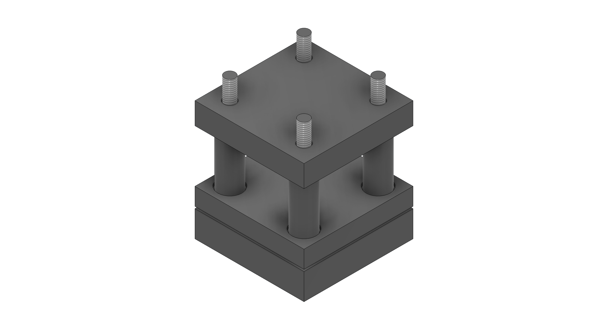
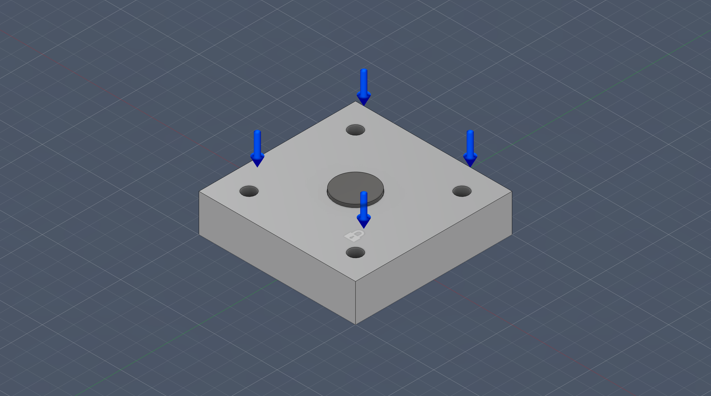
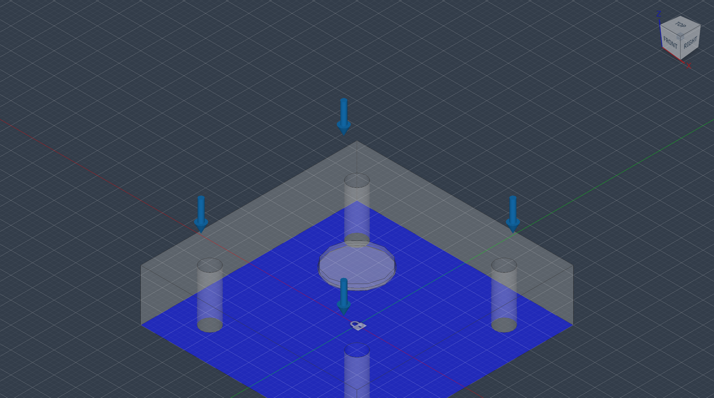
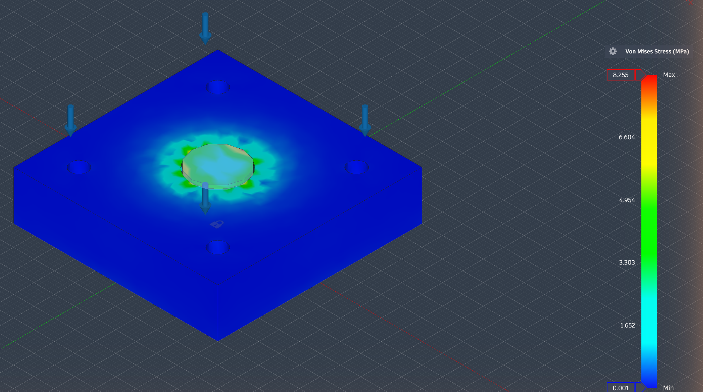
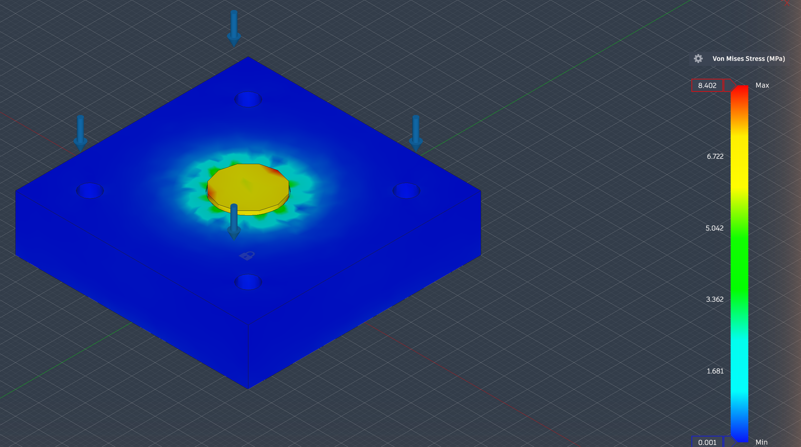
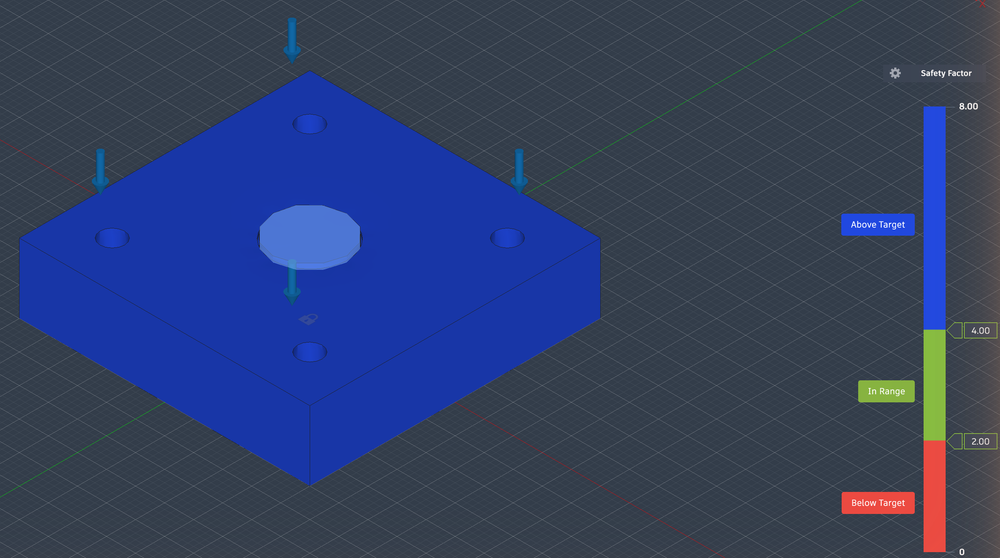
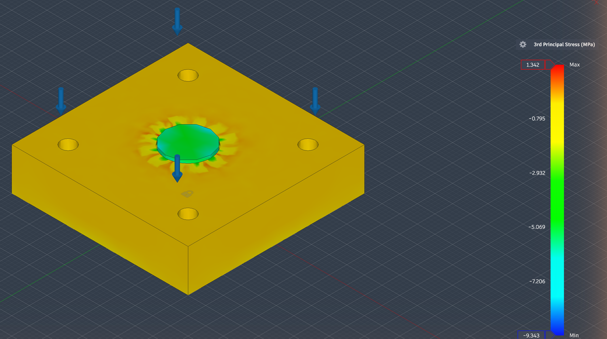
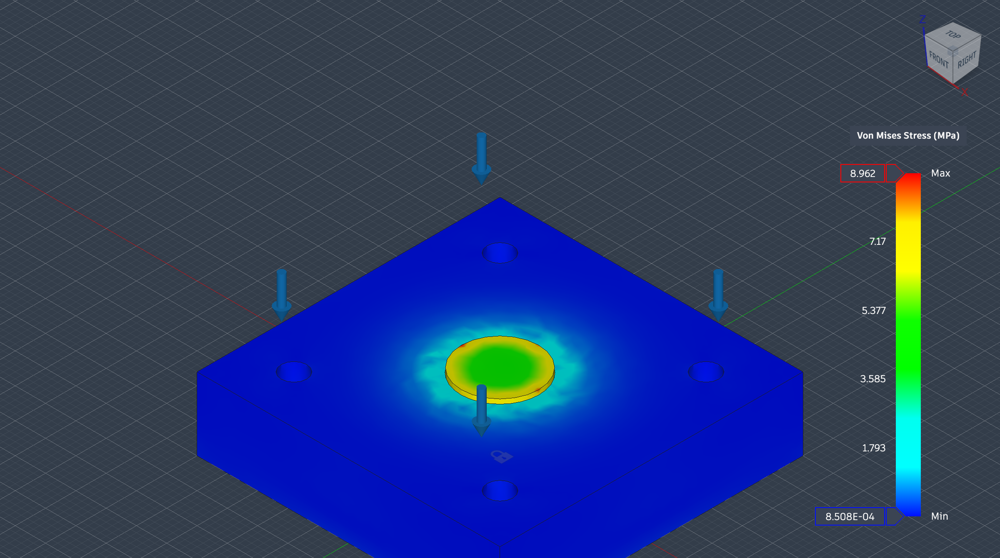
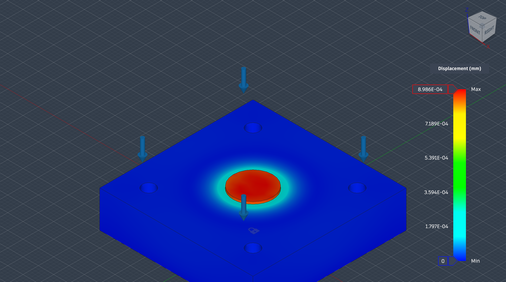
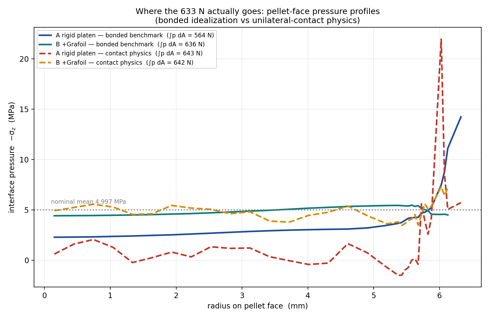

A spring-loaded fixture that applies 5 MPa of uniform stack pressure to a Ø12.7 mm solid-state cell — the same production-relevant operating point as the anode-free solid-state Li-metal platform I work on (manuscript in preparation). Designed end-to-end in Fusion 360 (parametric, script-driven), detailed with a GD&T drawing, and analyzed with a load-documented, mesh-converged FEA study that answers a real reliability question: does a rigid platen put the brittle LLZO at risk, and does a compliant interposer fix it? Toolchain: Fusion 360 parametric modeling + GD&T + FEA — skills transferable to CATIA.
Every dimension is a named user parameter (plate size 50 mm, corner inset 8 mm, hole Ø5.5 mm…), so the fixture rescales with the cell. Parts were generated as Fusion 360 Python API scripts — one component per part, assembled by parameter-driven transforms.

The fixture was built the way production tooling should be: one parametric script per part, then a transform-based assembly script that computes every position live from the shared parameter table. Click a build step to see that part (or the assembly) in 3D — drag to rotate, scroll to zoom, use the slider to explode the assembly.
Static stress studies in Fusion 360 Simulation, solved locally. Simulation model = platen + LLZO + Li + base plate (sub-µm foils suppressed — they only add mesh pathology, not load path). All geometry changes for the study live in simulation-model copies; the design was never modified.
| Item | Specification |
|---|---|
| Fixed constraint | Base-plate bottom face (2444.6 mm²) — fixture sits on a rigid bench. |
| Applied load | 4 × 158.25 N on the platen spring-seat annular faces (72.97 mm² each), direction −Z (pressing down). Total 633 N = 5 MPa on the cell footprint. Fusion's default face-normal pointed +Z — flipped explicitly; a classic setup trap worth documenting. |
| Contacts | Automatic contact detection, 0.10 mm tolerance (bonded). |
| Solver | Local solve (all studies), status Complete. |
| Body | Target properties | Assigned in study | Why |
|---|---|---|---|
| Plates (endplate/platen/base) | Al 6061 | AS-IS Aluminum | Standard library material. |
| LLZO pellet | E≈150 GPa, ν≈0.25 | PROXY Gray cast iron ASTM A48 (E=151.7 GPa, ν=0.341) | Fusion's Study-Materials dialog only accepts library entries; closest-modulus proxies were chosen and the mismatch is declared. Custom document materials (LLZO 150/0.25/5100, Li 5/0.38/534, Grafoil 1/0.20/1120) were created via API for reference. |
| Li layer | E≈5 GPa, ν≈0.38 (linear-elastic; RT creep out of scope) | PROXY Acrylic (E=2.74 GPa, ν=0.355) | |
| Grafoil pad (Case B) | through-thickness E≈1 GPa (assumed), Ø12.7 × 0.75 mm | PROXY HDPE (E=0.911 GPa, ν=0.392, isotropic) |


A rigid flat platen delivers stack pressure to the cell edge-first — a classic edge-of-contact concentration, and a crack-initiation risk for brittle LLZO. The study quantifies the concentration and tests the mitigation every battery-test lab actually uses: a thin compliant pad.




Case B re-solved at two absolute mesh sizes (5 mm, 2.5 mm) on cloned studies. The quantity the conclusion rests on — the LLZO-face peak — is mesh-stable. The global maximum is not, and saying so matters.
| Study | Mesh | Elements | LLZO-face peak (MPa) | Global max (MPa) | Notes |
|---|---|---|---|---|---|
| Case B | default (model-based) | 7,032 | 5.99 | — | edge maxima not quoted — singular field (Model C, §6) |
| Case B fine | 5 mm absolute | 6,488 | 6.085 | — | absolute sizing redistributes elements (plates finer, cell coarser); edge maxima not quoted — singular field (Model C, §6) |
| Case B finer | 2.5 mm absolute | 21,683 | 5.372 | 6.917 | von Mises max 12.307; max displacement 0.013 mm |


To make the conclusion tool-independent, the whole fixture-stress study was rebuilt in a second, independent engine (COMSOL — "Model C"): first a benchmark-match variant (same idealization and proxy materials as the Fusion studies), then a physics-correct variant (intended materials and unilateral frictionless contact at the platen|cell interface — nothing in the real stack is glued). On every convergent quantity, the engines agree.
| Convergent quantity (benchmark-match) | COMSOL (Model C) | Fusion (solver report) | Agreement |
|---|---|---|---|
| Reaction force (statics) | 633.0 N | 633 N applied | exact |
| Case A max displacement | 0.0097 mm | 0.011 mm | −12% |
| Case B pellet-face peak | 6.74 MPa | 5.99 MPa (probe) | +13% |
| Case B peak / mean | 1.35× | ≈1.20× | +13% — the pad de-singularizes the edge |
The rigid-platen "peak" is deliberately absent from this table: the mesh sweep shows it is edge-singular (rim refinement 3.0 mm → 0.6 mm drives the benchmark peak/mean 5.10× → 9.26×, monotonically), so any single "max" there is a mesh sample, not a physical number. The design-meaningful quantities are the convergent ones above.
Refining the model toward real contact physics makes the design conclusion stronger, not weaker. With unilateral contact and intended materials, the corner-loaded platen bends concave-up, the pellet centre nearly unloads, and essentially the whole 633 N rides a sub-millimetre ring at the pellet rim — each profile's surface integral recovers the applied load to ±3.8%.
